Íratkozz fel a hírlevelünkre, ingyenes utazási tippekért és trükkökért.
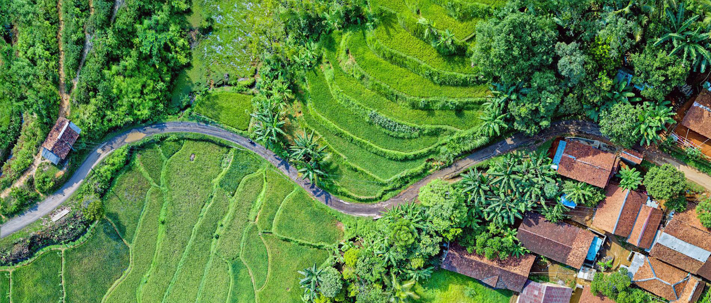
INDONÉZIA
Indonézia Délkelet-Ázsiában található, a világ legnagyobb szigetállama, egy olyan gyönyörű
ország, amely egyedülállóan ötvözi a hagyományt és a modernitást. Közel 17 ezer szigetén változatos
és lenyűgöző tájak, kultúrák és élmények várják a látogatókat. Indonézia egy igazi trópusi
paradicsom, ahol a smaragdzöld rizsföldektől a vulkánok füstölgő csúcsaiig és a fehér homokos
tengerpartokig minden megtalálható.
Az ország gazdag történelemmel rendelkezik, ami megnyilvánul az ősi hindu-buddhista templomokban,
mint például a világ legnagyobb buddhista temploma, a Borobudur. Itt az idő olyan érzetet kelt,
mintha visszatérnél az időben, és a múltba lépnél egy olyan helyre, ahol a vallás és a művészet
harmóniában él egymással.
A kulturális sokszínűség Indonézia egyik legfontosabb vonása. A szigeteken több mint 300 etnikai
csoport él, mindegyikük saját nyelvével, hagyományaival és viseletével. A legnagyobb városok, mint
Jakarta és Yogyakarta, pezsgő kulturális központok, ahol a hagyományos és a modern életstílus
találkozik.
Indonézia neve egybeforrt a kulináris élvezetekkel. Az ország gasztronómiája elképesztően
változatos, a helyi fűszerek és ízesítők pedig egyedi ízeket kölcsönöznek az ételeknek. Próbáld ki a
nasi gorengot, a rendkívül népszerű sült rizst tojással és zöldségekkel, vagy kóstold meg a
rendkívül ízletes rendangot, a hagyományos húspörköltet.
Az indonéz természetvédelmi területek is lenyűgözőek. Az élénk zöld rizsföldek, a csillogó tavak és
a buja dzsungelek olyan látványokat kínálnak, amelyek felejthetetlenek maradnak. A Komodo-szigeteken
található Komodo-sárkányok, azaz Varanus komodoensis, az egyedülálló állatvilág egyik remeke, melyet
Indonézia büszkén mutat be a világnak.
Az ország partjai káprázatosak, és a korallszigetek gazdag tengeri életükkel híresek. Bali az egyik
legnépszerűbb tengerparti célpont, ahol a napfényes strandok, a szörfparadicsomok és a lenyűgöző
korallzátonyok egyaránt elvarázsolják az idelátogatókat. A Gili-szigetek pedig a nyugalmat és az
idilli szigeti hangulatot kínálják, ideális hely a pihenésre és a víz alatti paradicsom
felfedezésére.
Pénznem
Indonéz rúpia (IDR), 1 Ft = 43 IDR 2023-ban
Időeltolódás
Magyarországhoz képest +6 óra
Nyelv
Indonéz, de az angolt is egyre többen beszélik, főleg ahol a turizmus jelen
van
Vízum
30 napnál nem hosszabb, turizmus céljából történő látogatás esetén 500.000
IDR a vízumdíj. Intézhető beutazáskor helyben.
Bali, Indonézia legsűrűbben látogatott szigete, sokszínű kulturális és természeti értékeivel
vonzza a látogatókat. A sziget a kéklő óceán, a trópusi dzsungel és a vulkánok által
meghatározott varázslatos tájakkal büszkélkedhet. Bali híres a gazdag hindu kulturális
örökségéről, melyet a színes templomok, a tradicionális táncok és a hindu ünnepek emelnek ki.
A gazdag történelmi hagyományok és a helyi művészetek, mint például a faragott fa- és kőszobrok,
valamint a tradicionális batikminta, kifejezik gazdag kulturális identitását. A sziget
változatos gasztronómiai élményeket is kínál, ahol az ízletes indonéz ételek és a helyi
specialitások megismertetik az érzékeket a helyi ízekkel.
A turisták Bali különleges tengerparti célpontjaiban, mint például Uluwatu és Seminyak,
élvezhetik
a világszínvonalú strandokat, a szörfparadicsomokat és a luxus üdülőhelyeket. A gazdag vízalatti
élet miatt a sziget kiváló helyszín a búvárkodás és a snorkeling szerelmeseinek.
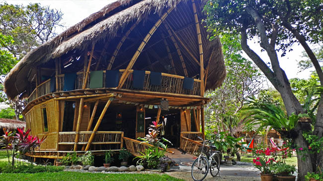
Tradicionális balinéz ház - Sanur
Utazás
Magyarországról csak repülővel megközelíthető. Közvetlen járat nem indul, minimum 1 átszállással
lehet csak eljutni Denpasar repterére. Leggyorsabban a Turkish Airlines, az Emirates vagya
Qatar-ral lehet kijutni.
Mi utóbbival és dohai átszállással érkeztünk helyi idő szerint késő éjjel. Magyar
állampolgároknak már vízumkötelezettség van, illetve a beléptetésnél érdemes minimum 2-3 órát
rászámolni, az indonéz hatóságok nem a gyorsaságukról híresek.
UTAZÓS TIPP:
Utazás előtt olvasd el a legfrissebb beutazással
kapcsolatos információkat a KONZULI
SZOLGÁLAT
oldalán!
A reptérről előzetesen taxit foglaltunk, mert a szállásunk Sanur városában volt. Kivételesen
érdemes a reptéri ATM-ből felvenni némi
készpénzt, mert az indonéz rúpia híresen gyenge és maximalizálva van, hogy mennyi pénzt lehet
felvenni, míg a taxis biztosan csak készpénzt fog elfogadni.
Bali kb. Békés megye nagyságú sziget, népsűrűsége 750 fő/km2 (Békés: 60 fő/km2), azaz nagyon
zsúfolt, tömegközlekedés lényegében nincs, így ha bármilyen programot tervezel vagy csak A-ból
B-be szeretnél eljutni, akkor a következő variációkból tudsz választani.
Bérelsz robogót. Mi nem próbáltuk, mert a poggyászainkkal mentünk leggyakrabban. Úgy olvastma
,hogy 2023-tól jelentősen megszigorították a motor bérlést külföldieknek, így indulás előtt
érdmees lehet joban utánajárni az aktuális szabályzásnak. Ha érdekel a motorbérlés Balin, írj
nekünk vagy íratkozz fel a hírlevelünkre, hogy ne maradj le a legfrissebb információkról!
Hívsz taxit (Bluebird szolgáltatót válaszd, van applikációjuk, elérhető angolul is) vagy Grabet.
Utóbbi az Uber ázsia megfelelőeje, ha használál már taxi rendelő appot, akkor ezt is fogod tudni
használni. Szintén elérhető angolul. Mindkettőt inkább helyközi utazásokhoz ajánlom.
Jó alternativája a sziget felfedezésének, ha felfogadsz egy helyi sofőrt, aki kocsival elvisz
azokra a helyekre, melyeket meg szeretnél nézni. Jellemzően az előre kiválasztható túrákon túl
lehetőség van saját ötletek, túraútvonalak kialakítására is, akár felár nélkül is. Mi a Bali Cab szolgáltatót válattuk. 1 autó
8 órás útra 2019-ben 10 ezer forintba került.
Megbeszélt időre érkezett a sofőr a B&B elé, és helyben pár percben átbeszéltük, hogy kb. miket
szeretnénk megnézni, mik érdekelnek. Egy kérésünk volt, hogy ne a legzsúfoltabb helykere vigyen,
hanem olyan alternativákat mutasson, melyek kevésbé felkapottak, cserébe sokkal autentikusabbak.
Bali programlistája kb. végtelenhez közelít, így pár mondatban leírjuk, hogy mi merre jártunk:
Sangeh Monkey Forest
Az Ubudi Monkey Forest utazós alternatívája, sokkal kevesebb
látogató és barátságosabb árak jellemzik. Ubudtól északabbra található a trópusi
dzsungel hangulatos ösvényein sétálva a látogatók szorosan
közelről figyelhetik meg a majmokat. Az ősi Pura Bukit Sari templom,
mely a terület középpontjában található, tovább fokozza a helyszín szellemi és
történelmi vonzerejét.
Sangeh Monkey Forest - Bali
Taman Ayun Temple
A templomot a 17. században építették Mengwi dinasztiája alatt, és a
Mengwi királyság egykori főtemplomaként ismert. A Taman Ayun szó szó szerint azt
jelenti "gyönyörű kert", és a templom neve a csodálatos kertekre utal, amelyek a
templom körül terülnek el. A Taman Ayun templomot Balin belül az UNESCO által
világörökségi helyként ismerték el, mivel fontos példája a balinéz
templomépítészetnek és a tradicionális kerttervezésnek.
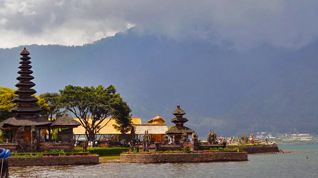
Taman Ayun Temple - Bali
Kopi Luwak Baturiti
A Kopi Luwak, vagy más néven Luwak kávé, egy különleges és ritka
kávéfajta, melyet a világ kevés régióiban termesztenek. Az egyedi jellegét az adja,
hogy a kávébabokat a cibetmacska kiválogatja és elfogyasztja, majd
az emésztőrendszerén keresztül válogatottan üríti ki, mielőtt a kávébabokat
feldolgoznák és elkészítik belőlük a kávét. A Baturitibe a belépés 500 Ft-nak
megfelelő IDR volt, ezért cserébe 12 féle helyi kávét és teát lehetett kostólni, meg
még különféle nasikat is felszolgáltak.
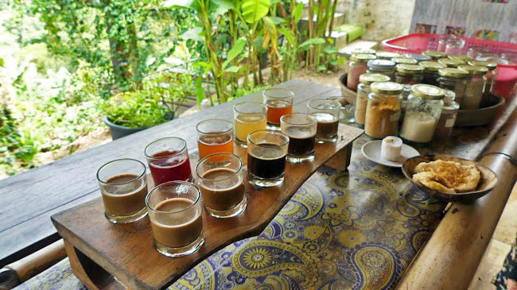
Kopi Luwak Baturiti - Bali
Ulun Danu Beratan
Az Ulun Danu Beratan templom Bali északi részén található a
Bratan-tó partján, egy mágikus környezetben. A templomot a tó közepén fekvő kis
szigeten építették fel, ami gyönyörű látványt nyújt a víz tükrében. Az Ulun Danu
Beratan templom a hindu vallás egyik legfontosabb szentélye Bali szigetén és nem
csak vallási, hanem építészeti szépsége miatt is népszerű úti cél.
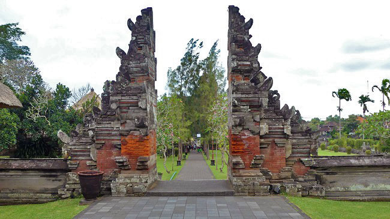
Ulun Danu Beratan kapuja - Bali
Tanah Lot
Bali egyik ikonikus szent helye, egy sziklára épült hindu
tengerparti templom, melyet az Indiai-óceán hullámai körülvesznek. A naplemente
ideális időpontja a látogatásnak, amikor a templom vörösesbarna sziklái kontrasztban
állnak a lenyugvó nap arany színű sugarainak tükröződésével. A templomot a tengeri
isten, Baruna tiszteletére emelték, és a hely hírnevét a varázslatos környezetének
és a tengerparti sziklákon elhelyezkedő szent kígyó kövületének köszönheti.
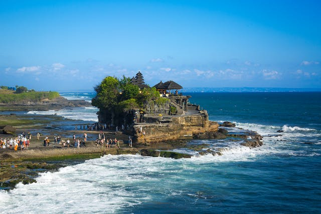
Tanah Lot - Bali
Tegallalang
Tegallalang rizsteraszai Bali középső részén helyezkednek el, lenyűgöző látványt
nyújtva a meredek domboldalakon terülő szemet gyönyörködtető rizsföldekből. Bali
egyik legikonikusabb látványosságaként a rizsteraszok hagyományos balinéz
mezőgazdasági művelésre emlékeztetnek, és jól tükrözik a sziget lakóinak kapcsolatát
a természettel. A rizsteraszok nemcsak a mezőgazdaságban fontosak, hanem kulturális
és vallási szempontból is, hiszen a helyiek itt rendezik meg a rizs termése utáni
hálátadó ünnepségeiket.
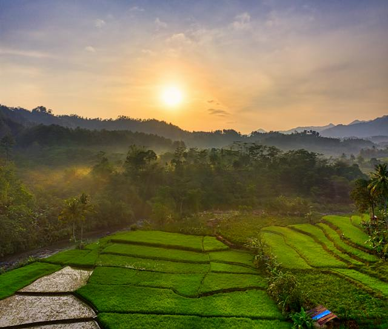
Rizsterasz napfelkeltében - Bali
Ubud
Bali kulturális szíve, egy varázslatos város, mely a trópusi dzsungel és a
rizsföldek ölelésében fekszik. A város kis mérete ellenére rendkívül gazdag
kulturális élményeket kínál a látogatóknak. Ubud híres az élénk piacairól, ahol
kézműves termékeket, helyi művészeti alkotásokat és hagyományos indonéz
csecsebecséket lehet vásárolni. A város számos művészeti galériát és műhelyt is
felvonultat, ahol a helyi és nemzetközi művészek bemutatják munkáikat.
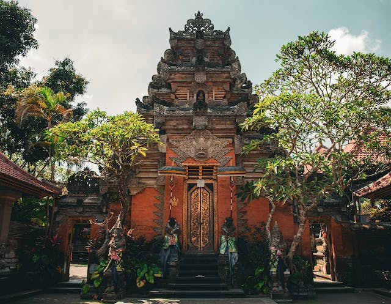
Ubud - Bali
Hagyományos balinéz táncok
A hagyományos balinéz táncok gyakran tükrözik a hindu vallás és a balinéz mitológia
témáit. Két fő
típusa van: a legong és a barong tánc. A legong táncok a fiatal lányok kifinomult
mozdulatairól és hagyományos balinéz ruházatukról ismertek, míg a barong tánc egy
drámai előadás, amelyben jó és gonosz erők küzdenek egymás ellen.
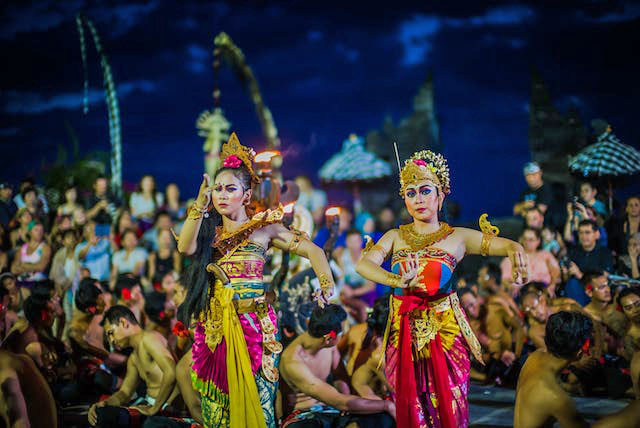
Balinéz tradicionális tánc - Bali
Bali értékelése:
Gili-szigetek
A Gili-szigetek Lombok észak-nyugati partjainál találhatók és egyedülálló tengeri paradicsomot
kínálnak az utazóknak. Gili Trawangan, Gili Air és Gili Meno azok a főbb szigetek, melyek a
tiszta, kristálytiszta vizű tengerpartok, a homokos strandok és a korallszigetek miatt váltak
ismertté.
A Gili-szigetek rendkívüli csendjében és idilli környezetében a látogatók elmerülhetnek az
egyszerűségben és a természeti szépségben. A szigetek kis mérete miatt nincsenek motorizált
járművek, így a kerékpározás és a lovas kocsik a közlekedés fő eszközei. A naplemente a
Gili-szigeteken különleges élményt nyújt, ahogy a nap lebukik a horizont mögé a tengerparti
látványosságok mellett.
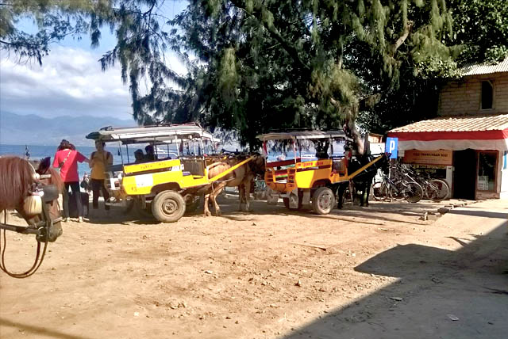
Lovas kocsi, mint taxi - Gili Trawangan
A szigetek a búvárkodók és a snorkelkedők paradicsoma is, hiszen a gazdag tengeri élet, a
teknősök és a színpompás korallzátonyok káprázatos lehetőségeket kínálnak a víz alatti
felfedezésre. A Gili-szigetek azok számára nyújtanak menedéket, akik egy nyugodt, idilli
környezetben szeretnék eltölteni pihentető napjaikat, távol a nagyvárosok zajától.
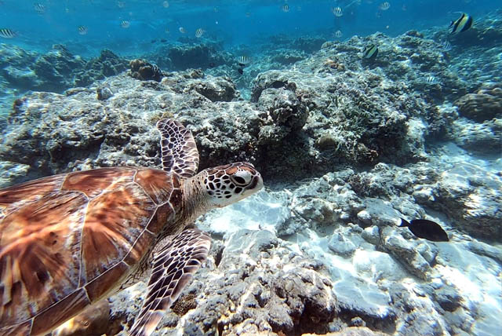
sznorkeling - Gili Meno
Utazás
Két irányból lehet a szigeteket megközelíteni, Baliról vagy Lombok felöl. Mi előbbi felől
érkeztünk és utóbbi felé távoztunk. Online lehet 2in1 jegyet foglalni mindkét szigetről, ami
annyit jelent, hogy kisbusszal felvesznek bizonyos megálló pontokban, majd a kikőtbe kiraknak,
ahonnan kisebb méretű gyors hajókkal tudsz eljutni az általad kiválaszott szigetre. A menetetidő
kb. 4-5 óra a busz és a hajó út együttesen. A szigetek között is közlekedhetünk reggeltől
délutánig (próbáljátok elérni az utolsó hajót, ha nem akartok egy másik szigeten éjszakázni), a
public boat akkor indul amikor megtelik, a gyorsabb hajó nagyjából óránként jár, cserébe 5-6x
drágább.
Ajánlott utazási iroda: Easy Gili
and Craft Beer. Indonéz viszonyok között pontosak és korrektek.
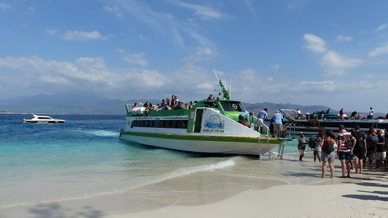
Megérkeztünk - Gili Trawangan
Melyik Gili szigetet válaszd?
Gili Trawangan
Gili Trawangan a legnagyobb sziget. Ezt tartják a legbulisabbnak,
így aki szeretné maga beosztani, mikor pihen és mikor van ébren, érdemesebb a sziget
közepén szállást keresgélnie. Gyakorlatilag a luxustól az egyszerűbbekig mindent meg
lehet már itt találni.
Ha felfedeznénk a szigetet akkor tudunk biciklit bérelni, de sok
szálláshoz már alap tartozék a bicikli használat (a
motoros járművek ki vannak tiltva), egy óra alatt lazán körbetekerünk, vagy
felfedezhetjük a sziget belsejét is, ahol van egy apró kilátó és egy-két mecset. Ha
eltévednénk középen csak menjünk egy irányba pár percig, és kilyukadunk a
tengerparton.
Az éjszakai élet egyértelműen ezen a szigeten a legnagyobb. Este
elkezdődik a buli a tengerparti szórakozóhelyeken, ahol mindenféle stílus
fellelhető: DJ-szettek, rockzene, reggae, retró, és persze élőzene. Zenélni
egyébként is nagyon szeretnek a helyiek, százméterenként biztos találsz pár fiatalt
akik gitároznak a földön ülve, és nagyon örülnek ha te is beszállsz. A
szórakozóhelyek nagyjából éjfélig vannak nyitva, majd a buli áttelepül egy hatalmas
szórakozóhelyre, ez a hely a hét minden napján másik. Egy-két kisebb helyen is
folyik még a buli, de mindig tudni lehet hogy aznap este hol lesz az igazi élet.
Gili Meno
A középső sziget Gili Meno, ami jóval nyugisabb mint Gili
Trawangan, de még mindig pörgősebb, mint Gili Air. Itt nyugodtabb, csendesebb
környezet fogadja az idelátogatókat, hangulatos faházak a parton és kellemes
éttermek.
A sziget északkeleti csücskén találhatóak a tengeri
teknősök. Lehet snorkeles idegenvezetésre is befizetni, de sokkal jobb, ha veszel
magadnak egy saját szettet és beleveted magad a vízbe. Egy tengeri cipő sem árt,
mert amíg azon a részen ahol elérsz a merülhető vízig ötvenszer szétvágod a lábad az
apróra tört korallokon.
Gili Air
Gili Air a legközelebbi sziget Lomboktól és egyben a
legnyugisabb is. Nászutas pároknak, akik el szeretnének
vonulni a világ elől tökéletes lehet.
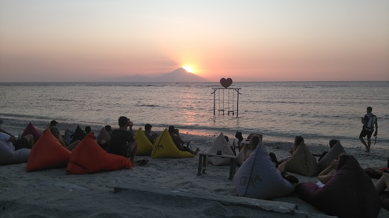
Naplemente nézés - Gili Trawangan
Ha meghoztuk a kedvetek a Gili-szigetekhez, akkor ajánljuk figyelmetekbe Szécsi László, alias "Beférek a bőröndbe" Youtube csatorna ide vonatkozó videóját:
Gili értékelése:
+
Lombok
A Gili-szigetekről hazafelé Lombok felé vettük az irányt, mert másnap onnan indultunk tovább
Kuala Lumpurba. Már napokkal előbb megbeszéltük az egyik helyi étteremben dolgozó sráccal - akit
szintén Robynak hívnak - hogy elvisszük magunkkal, mert pont a házuk előtt fogunk elmenni a
szállásunkra igyekezvén. Nekünk nem került semmibe, neki viszont segítség, órákkal előbb
hazajut.
A már bevállt 2in1 jegytípust választottuk, gyors hajóval átvittek Lombokra, majd ott várt egy
autó, amivel a szállásig vittek. Roby útközben jobb guide volt, amint a sofőrünk, több szuper
kilátó spoton is
megálltunk, vett nekünk helyi kókuszt is míg nem figyeltünk oda. Roby lebeszélte a sofőrrel,
hogy útközben megállunk náluk is,
mindenképpen várjon meg minket.
Roby családja elképesztő szeretettel fogadott bennünket rögtön a környék összes lakója körénk
gyűlt megszemlélni, hogy milyen idegenek érkeztek. Szegény sorsban éltek, a pár évvel ezelőtti
cunami és földrengés elvitte mindenüket, mégis 2 perc alatt valóságos "terülj terülj
asztalkámat" varázsoltak nekünk helyi gyümölcsökből. Azóta sem ettünk olyan finom mangót, még
útra is csomagoltak nekünk 😍.
A szállásunk a reptér melleti hotelben volt, a szállás felejthető, csak szimplán praktikus a
repülőtér közelsége miatt.
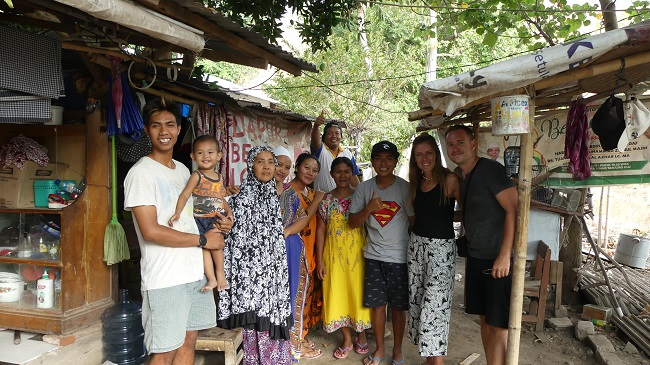
Roby és családja - Lombok
Lombok értékelése:
Ha tetszenek az úti leírásaink vagy csak szeretnéd Te is magad felfedezni a világot, eljutni
olyan helyekre, melyekre a hagyományos utazási irodák nem visznek, esetleg nem tudod hogyan állj
neki a megszerevezésnek vagy csak időd nincs rá, keress minket bátran!
Te elmondod hova és hogyan, mi pedig megszervezzük álmaid kalandját!